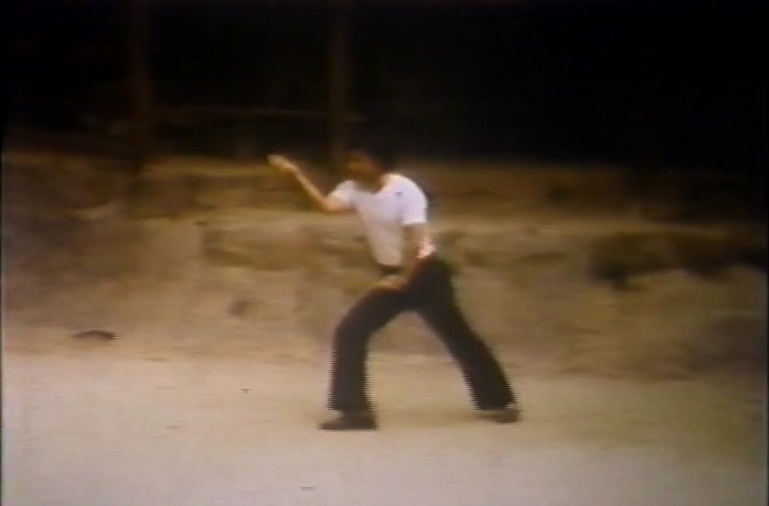

Blog · Diciembre de 2015
El estilo devastador del Hsing-I · Parte 4
Foto
Blog · Diciembre de 2015
Adaptado para la web del boletín de Sifu James W. McNeil, con ligeras ediciones. Sifu McNeil es el Guardián de la Puerta del sistema Little Nine Heaven Wu Tao y el maestro de Sifu Ajay Kumra, que enseña clases particulares en Santee, California.
Como se dijo antes, el Hsing-I consta de los cinco elementos: metal, agua, madera, fuego y tierra. Dentro del sistema de Hsing-I hay formas específicas que corresponden a cada uno de los elementos. Cada elemento tiene un estilo y una calidad de movimiento que lo distinguen de los demás. La acción del chi es única en cada uno de los cinco elementos y describe la calidad de movimiento que debe estar presente al ejecutar la forma de Hsing-I correspondiente para que se realice su efecto potencial. El estudiante debe dominar la aplicación de estas cualidades distintas antes de poder sentir el verdadero poder del Hsing-I. Los cinco elementos se caracterizan, en relación con el Hsing-I, de la siguiente manera:
Metal. Este elemento tiene el atributo de cortar: un golpe que viaja de arriba abajo y regresa, con una acción del chi como el subir y bajar de un hacha. En el combate de Hsing-I, las manos deben ser rápidas, directas, potentes e imparables, como la caída de un hacha que corta todo lo que encuentra a su paso.
Agua. El agua tiene la acción de perforar. La calidad del chi es como una columna de agua expulsada con gran fuerza. El agua es esencial para la vida, pero también contiene la muerte. El agua puede ser suave y fluir libremente; la usamos para beber, para bañarnos y para divertirnos, pero en forma de río embravecido o de tormenta violenta destruirá todo lo que encuentre a su paso. La acción del agua está mejor representada por la corriente de resaca, en la que poderosas corrientes oceánicas fluyen unas contra otras y, sin embargo, se alimentan mutuamente. En el combate de Hsing-I, siempre te esfuerzas por recibir la fuerza del oponente y usarla contra él, y el círculo se completa como un remolino cuando su energía se combina con la tuya en una sinergia que forma su destrucción.
Madera. La madera tiene el estilo de aplastar. Su acción del chi es como una flecha disparada por un arco. Cuando se impulsa hacia arriba al crecer o cuando cae aplastando contra la tierra, un árbol no cede fácilmente ante nada de lo que encuentra a su paso; su fuerza indomable aparta todo lo que se interpone. En el combate de Hsing-I, un brazo es como la rama de un árbol, sólido y fuerte, pero flexible. El puño debe salir disparado como una flecha en vuelo, y cuando conecta, perfora y penetra profundamente en el enemigo.
Fuego. Este elemento tiene el estilo de golpear como un martillo. La acción del chi es como el disparo de un cañón o el sonido impetuoso de la combustión en una explosión por contracorriente. El fuego es ligero como una pluma y nos da calor y felicidad. El fuego es pasión. Pero, si se le deja desbocarse, puede engullir todo lo que encuentra a su paso.
Viento. El compañero del fuego; el fuego produce viento y a la vez se alimenta del viento. Puede ser reconfortante para el cuerpo cuando sopla suavemente sobre la piel. El viento también puede soplar con un poder y una fuerza imparables, como en un tornado, con una fuerza tan devastadora que puede levantar un edificio entero y dejarlo caer a kilómetros de distancia. En el combate de Hsing-I, uno debe ser objetivo y no tener emociones, y luchar siempre, incluso en la práctica, como si se enfrentara a su peor enemigo. Cada golpe debe llegar al objetivo con la fuerza de una bala de cañón. Esto requiere una mente clara, una precisión concentrada y una puntería cuidadosa.
Tierra. Es la madre de todos los elementos. Tiene el estilo de cruzar. Su acción del chi es rodante y redonda como una canica. Giramos con seguridad sobre el eje de la Tierra mientras la Tierra continúa su órbita alrededor del sol, pero cuando el suelo empieza a temblar, nada está a salvo. En el combate de Hsing-I se puede aprovechar todo el poder de la Tierra. Esto se logra obteniendo una alineación perfecta y estando tan centrado, sólido y estable como una montaña. Al mismo tiempo, también debes ser móvil y ligero de pies, capaz de girar con rapidez, eficacia y soltura.
En el cuerpo, los órganos internos se dividen en dos grupos: los órganos yin o macizos, y los órganos yang o huecos. Cada uno de los órganos se identifica con uno de los elementos. Los órganos yin son el corazón, los pulmones, los riñones y el hígado. Los órganos yang son el intestino delgado, el estómago, el intestino grueso, la vejiga y la vesícula biliar.
Para aprender de verdad a captar el poder devastador del Hsing-I, hay que superar algunos de los errores comunes que son inevitables al aprender algo nuevo. Es lo más natural, y por eso todos tenemos maestros: para que corrijan lo que no podemos ver por nosotros mismos.
Cada movimiento y cada posición tienen un significado, y se han conservado a lo largo del tiempo con un propósito especial; que el estudiante pueda comprenderlo o no depende de la calidad de su instrucción y del tiempo que lleve estudiando. Las formas trabajan el chi a través de patrones específicos en el cuerpo, y ahí reside la magia. Siquiera pensar en modificar un arte que existe desde hace cientos de años requiere a alguien de gran habilidad, y en la mayoría de los casos esa persona parte del supuesto erróneo de que, al modificar una posición o un movimiento, lo está mejorando. Aunque un practicante hábil puede hacer modificaciones que le beneficien personalmente, no está en condiciones de mejorar la sabiduría de siglos de práctica en lo que respecta a la enseñanza de otros. Muchas veces, intentarlo significa que la magia se pierde. Por lo tanto, no es prudente que los maestros modernos revisen la enseñanza antigua de forma indiscriminada o por mero beneficio personal.
La mayoría de los errores que cometen los practicantes principiantes están relacionados con el equilibrio. Si puedes mantener el equilibrio mientras manipulas a tu oponente, puedes salir victorioso. Mantente enraizado, conserva la espalda recta y permanece siempre centrado, sólido y estable, y podrás derrotar a cualquiera.
En la práctica de las doce formas animales del Hsing-I es importante señalar que las características del espíritu o energéticas (hsing) del animal son más importantes que el hecho de que la forma parezca físicamente un animal. Esto también es común en otros estilos de artes marciales relacionados con animales. Los distintos linajes tienen movimientos diferentes para cada animal, y eso no quiere decir que uno sea mejor que otro. Lo importante es que el espíritu reflejado en los movimientos sea el adecuado para el animal que se emula, y de este modo se puede comprender claramente la conexión con el animal. Es este vínculo con las características físicas y espirituales del animal lo que une a todos los linajes del Hsing-I y los convierte en una sola familia, independientemente de las variaciones en la forma.
Algunos linajes también dan a las formas nombres distintos, o el nombre representa a un animal diferente. Por ejemplo, algunos ven al «Tow» como un animal mítico; otros dicen que es un caimán, un lagarto, una tortuga de agua o una tortuga de tierra. Pero, de nuevo, lo que debe analizarse son los movimientos energéticos de esos animales y cómo interactúan con la naturaleza, para ver sus semejanzas entre sí. La simple verdad es que el «Tow» podría reflejar cualquiera de los animales del ejemplo, y es la manera en que el linaje, y los maestros de ese linaje, han desarrollado la forma lo que ha dado forma a sus movimientos físicos. Es mejor no discutir sobre esas discrepancias, tanto en la literatura clásica como en la actual, ya que todas tienen argumentos válidos; simplemente observa la energía de cada forma, aprende a usarla y tu Hsing-I progresará. Los doce animales que se presentan aquí proceden del linaje de Shansi transmitido por mis maestros.
Comprender cómo se emplea cada animal en el ataque y la defensa es la clave para llegar a dominar el uso de estas formas en la defensa personal. Cada técnica animal también tiene beneficios para la salud dentro del cuerpo, ya que el chi se mueve de una manera específica con cada forma; si se practica correctamente, el flujo suave de chi que se desarrolla con cada forma animal tendrá un beneficio profundo para el cuerpo y para los órganos que corresponden a esa forma. Si se practica incorrectamente, por supuesto, el flujo de chi puede verse obstaculizado, y esto puede hacer que se desarrollen problemas de salud dentro del cuerpo. Por lo tanto, al practicar cualquier forma de Hsing-I se requiere una instrucción competente y es necesario prestar atención a los detalles para obtener sus beneficios para la salud.
Aquí trataré solo uno de los animales, describiendo su espíritu o sus cualidades energéticas y lo que aporta al cuerpo en cuanto a salud y combate. No hay un orden concreto para aprender las doce formas animales, y varía de un maestro a otro según su preferencia. Las formas en sí no se muestran aquí.
Los doce animales de nuestro sistema son el dragón, el tigre, el mono, el caballo, el Tow, el gallo, el fénix, el gorrión/halcón, la golondrina, la serpiente, el águila/oso y el gallo de pelea.
El caballo, o Ma como se le conoce en chino, es un animal rápido y poderoso, lleno de vida y energía; tiene una gran resistencia y un corazón fuerte. Durante el combate, un caballo se alza sobre sus patas traseras y golpea repetidamente con sus cascos delanteros, imitando la forma en que galopa y usando esta acción natural para defenderse. En la aplicación de esta forma, el movimiento de las partes superior e inferior del cuerpo debe estar debidamente equilibrado para mostrar las características fuertes y poderosas de la forma del caballo.
Cuando el caballo se alza sobre sus patas traseras, aumenta su altura para dominar en el ataque. Emplea una gran velocidad y golpea hacia delante o hacia atrás, hacia arriba o hacia abajo, según su situación. Al golpear hacia delante, su centro permanece sobre las patas traseras; al golpear hacia atrás, el equilibrio pasa a las patas delanteras. Esto requiere un excelente sentido del equilibrio y de la estabilidad para ejecutar sus ataques con potencia y eficacia. Si un caballo ve un hueco en una cerca o en un muro, instintivamente se lanzará a través de él. Con una mentalidad que aproveche esta característica, al aplicar la estrategia de la forma del caballo en una situación de combate, el practicante debe estar constantemente atento a cualquier hueco en la defensa del oponente. Si se abre un hueco, procura penetrar directamente a través de él en el ataque, como el caballo que se lanza a la carrera hacia la libertad.
Al practicar la forma del caballo en el Hsing-I, el peso debe permanecer cargado sobre el pie trasero, usando esta carga de potencia para impulsarse directamente hacia delante desde el suelo, canalizando esa energía hacia arriba a través del cuerpo y hacia fuera a través de los brazos hasta el oponente. Es importante mantenerse equilibrado y sólido durante la primera y la segunda postura de la forma.
Las formas del caballo pertenecen al elemento fuego y tienen, de principio a fin, acciones similares de torsión y giro de los antebrazos, como se practica en la forma del fuego. Esta torsión a través de los brazos da a los músculos y tendones mayor fuerza en la aplicación. La intención del chi en la forma del caballo es saltar, impulsarse hacia delante y pisotear; la rapidez de maniobra y un agudo sentido de anticipación son las claves de su aplicación exitosa. Todas estas son energías que pueden verse en la forma del caballo y en la estrategia que se usa para aplicarla en la defensa personal. El carácter del caballo es el de un animal leal, honorable y piadoso en sus actos. Esto representa la conciencia dentro del cuerpo que se conecta con las emociones. Esta conexión con la mente emocional significa que se alinea con el corazón, el órgano que gobierna las emociones. Cuando se practica correctamente, con movimientos suaves y armoniosos, la forma del caballo fortalecerá el chi del corazón. Esto, a su vez, mantendrá las emociones en calma y reducirá la ira interior que puede surgir fácilmente en situaciones de estrés como el combate. Al mantener las emociones en calma, el patrón de respiración también permanecerá tranquilo, y esto, a su vez, ayudará a que el cerebro se mantenga abastecido de chi limpio y fresco y de oxígeno, lo que permite al practicante pensar con claridad y actuar con honor, sin una ira precipitada.
Cuando se ejecuta correctamente, la forma del caballo se verá segura y confiada, y tendrá éxito en su ataque. Si se practica de forma errática, el patrón de respiración se volverá errático y la mente se confundirá. Esto llevará a sentirse inquieto y frustrado en la técnica, y el practicante actuará con ira y será derrotado con facilidad.
Lea más sobre el arte en la página de Hsing-I Chuan, o sobre el Maestro James McNeil. Esta es la última parte de la serie, que comienza con la parte 1: orígenes y los ocho fundamentos.
Del blog